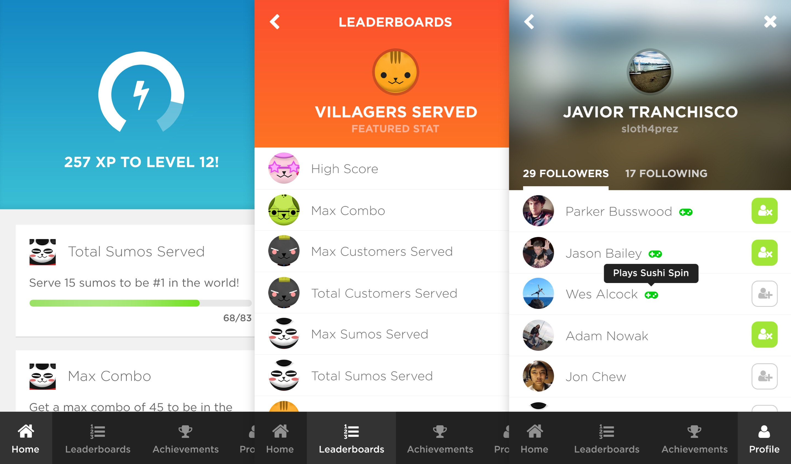
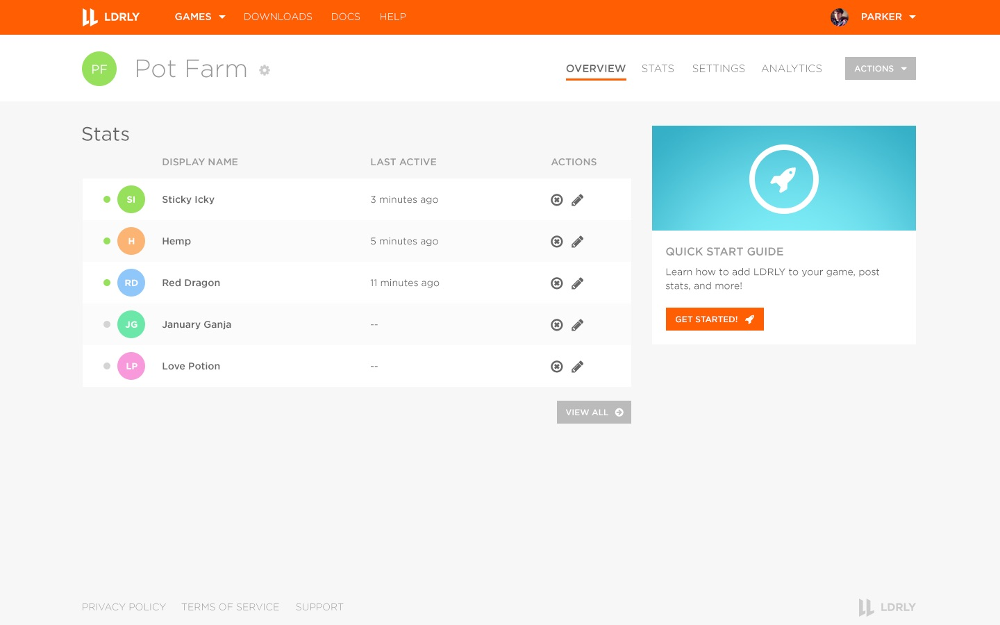

LDRLY
A world-class player intelligence platform.
In 2013, I co-founded LDRLY, a player intelligence platform that provides social and mobile game developers with tools to better retain, engage, and monetize their users.
I championed LDRLY from the prototype stage while I worked at East Side Games into a full-fledged startup, leading design and user experience across all products as Chief Creative Officer. I built a multi-disciplinary team covering software engineering, web development, and UI/UX design, and managed priorities and deliverables in collaboration with our CEO and CTO.
Our design team launched and refined our various products from concept to production, developing wireframes, mockups, rapid prototypes, and front-end code. We also facilitated user testing sessions to learn what our users were looking for, and combined this with a data-driven approach to design as we iterated on key features.
Over the course of my two years with the company, we designed and built user-facing engagement products for both social (Facebook) games and mobile (iOS and Android) games. We also created a developer site to allow game developers to easily get started, read documentation for each platform, and manage their integrations. Our product took in tens of millions of data points from hundreds of thousands of users every day, and processed that data to create dynamic, real-time player engagement features.
The Results
Take a look at the final product.
 More Projects
Check out what else I've been working on.


@ParkerBusswood: Love the idea of @startupvisaca. Lower barrier to entry, bring best #tech #startups to #Vancouver, and invest in their success. /cc @bwertz